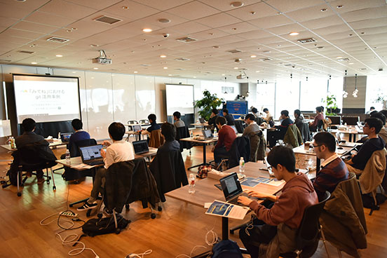

節分の日に開催された第8回大会は、大会史上2回目となる「3チーム同時優勝」で幕を閉じました。Twitter上でも「#mixi_git」のハッシュタグを用いて、皆さん楽しく投稿もいただいておりました。
| [git challenge ＃8 参加記 #mixi_git | 東京工業大学デジタル創作同好会traP](https://trap.jp/post/496/) |

git challengeの第8回大会が開始となりました。毎回天気に恵まれて嬉しい限りです。各サービスのgit事例を共有したのちに、只今チュートリアル中です。 #mixi_git pic.twitter.com/7mofbc1S4D
— ミクシィグループ 新卒採用公式アカウント (@HR_mixi) February 3, 2018
競技開始前のランチタイムです。本日は「節分の日」ですので、恵方巻きをご用意しました。お品書きもステキです。 #mixi_git pic.twitter.com/9lBVmg3gn4
— ミクシィグループ 新卒採用公式アカウント (@HR_mixi) February 3, 2018
競技開始から約1時間が経過しました。解答内容をリセットする「リセットセンター」には随時お越しになっています。そして、まもなくおやつの時間です。 #mixi_git pic.twitter.com/a2KSxnnlq6
— ミクシィグループ 新卒採用公式アカウント (@HR_mixi) February 3, 2018
昨年同様、節分にちなんだお菓子をご用意しました。少し休憩いただきながら、後半戦も頑張ってください！ #mixi_git pic.twitter.com/MF6x7Am4Cz
— ミクシィグループ 新卒採用公式アカウント (@HR_mixi) February 3, 2018
一昨日は、3チーム同時優勝で幕を閉じた「git challenge」。参加者の皆さん、お疲れ様でした。続々と感想をお聞かせいただけて、嬉しい限りです。次回もパワーアップして開催できるように準備してまいります！#mixi_git pic.twitter.com/uY97qTCajX
— ミクシィグループ 新卒採用公式アカウント (@HR_mixi) February 5, 2018